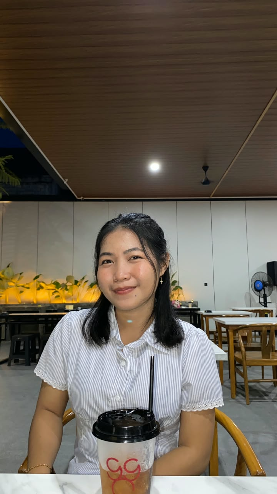

PORTOFOLIO MAHASISWA
Halo, saya Veronica Putri.
Saya mahasiswa Ilmu Komputer yang sedang belajar memahami teknologi, mengembangkan kemampuan pemrograman, dan mengenal bagaimana teknologi cloud dapat digunakan dalam kehidupan sehari-hari.

dan terus mencoba.
TENTANG SAYA
Mengenal teknologi
dari hal sederhana.
Perkenalkan, saya Veronica Putri dari Program Studi Ilmu Komputer, Fakultas Bisnis dan Informatika, Universitas Muhammadiyah Palangka Raya. Melalui perkuliahan, saya mempelajari dasar-dasar komputer, pemrograman, pengelolaan data, dan perkembangan teknologi informasi.
Website ini dibuat sebagai bagian dari tugas mata kuliah Komputasi Awan. Isinya mencakup pengenalan layanan cloud dan dokumentasi tugas yang telah dikerjakan. Saya berharap website sederhana ini dapat menjadi tempat untuk menyimpan sekaligus memperkenalkan hasil belajar saya.
Baca materi komputasi awanJELAJAHI WEBSITE
Ruang belajar saya
Silakan kunjungi halaman lain untuk melihat materi dan ringkasan tugas perkuliahan.